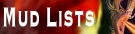

|
The
Forest's Edge |
 |
| |
|
| Home Connect Player Directory Who's Online Help Pages Player Clans Resources Credits  |
Well as you can all see, I've
decided to close down the MUD. It was taking a lot of my time,
and I'd gotten bogged down in the code to implement weather--I just
wasn't having fun anymore. A few players' critical comments were
the straw that broke the camel's back.
So what's going to happen to the code? That's up to all of you. I'd like to give it to someone who will continue the MUD. If you're interested, send me an email with some details: who you played on the MUD, what you want to do with it, whether you are experienced with C++, and anything else you can think of. Naturally I'll give preference to those with building experience on TFE. I won't provide any player files or account information. If no one suitable wants to do this, I'll release the code and areas here in a couple weeks for whoever wants them. I may end up releasing the code alone so the changes I've made can be used in other MUDs. --Severus
Welcome to The Forest's Edge, a legendary world of high fantasy roleplaying adventure! -- Playing The Forest's Edge is always FREE of charge
--
Travel this vast land in search of fame, fortune, and power. Seek out hidden places, for they are home to fantastic creatures and potent magics. But choose your race and profession wisely, and hone your skills, for the world of TFE is a dangerous place. We offer many advanced features, including player clans, quests, pets, diverse skills, religions, customized items, and an exceptionally large, detailed world full of fascinating monsters and magic. Extensive on-line help is available. You can view a partial list of areas open to players in help areas. Many areas are not listed here, because they connect other areas, or they are supposed to be secret. Take a look at the MOTD (Message Of The Day) for any news or the FAQ for common issues. You can also get the MUD status, which lists features that are still being implemented. Come join us, you won't be disappointed! What the heck is this?
The Forest's Edge (TFE) is a popular, classic Multi-User Domain (MUD), which means it's a text-based adventure game on the internet. It was developed by Alan Button, a.k.a. Greyclaw, by extending the ROM codebase with a general-purpose "softcode" parser for building complex situations for players. The game attracted a large base of addicted players and a corps of talented builders. Greyclaw himself abandoned the game several years ago. The current implementation started with Greyclaw's final codebase and world database distribution, and has many added capabilities and features, bug fixes, and new areas for players to explore. If this sounds interesting, feel free to connect to the MUD, create a character, and do a little exploring; there's no cost or commitment involved. You may also be able to get a feel for how the game works by browsing our help files. These are exact copies of the help topics available while playing the game. Begin with help newbie or help starting out. News: 21 January 2004: The warrior skill riposte is in. 21 November 2004: Olah has been busy: The Corrosive Touch, Elemental Burst, and Prismatic Spray spells are all in the game. 1 November 2004: The Magic Mapping spell can now be directly cast by mages and bards, in addition to being found on scrolls. 12 October 2004: The Teleport spell for mages is in. 7 October 2004: The Arc Lightning spell for mages is in. 7 August 2004: Players can now Speed walk. 1 July 2004: Players can Bury their excess loot, and Dig it up later. 23 June 2004: Items on the auction block, and unrecovered items in player corpses, can no longer be lost if the MUD crashes. 20 May 2004: Players can now use the Map command. 16 May 2004: Use Color Columns to set your screen width. 8 May 2004: The Cover Tracks skill for rangers is in. 18 April 2004: The text editor now has cut/copy/paste capabilities. See help editor for syntax. 13 April 2004: A spell checker has been built into the TFE text editor. See help editor for syntax. 13 April 2004: Players now have a scratchpad for their personal notes. See help journal for more information. -- Severus
You can connect to The Forest's Edge using telnet or a MUD client, at tfe.genesismuds.com port 2000. If for some reason you don't have DNS service, the machine's IP address is 216.136.9.5. |
| |